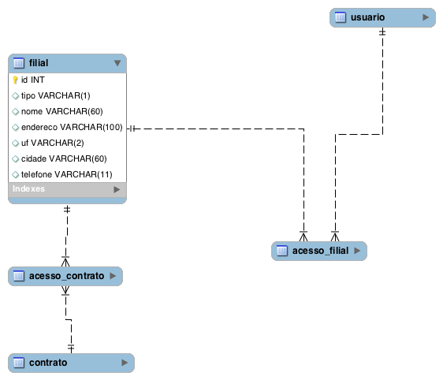
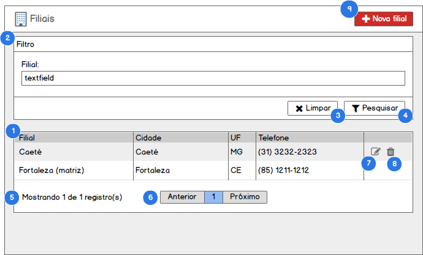
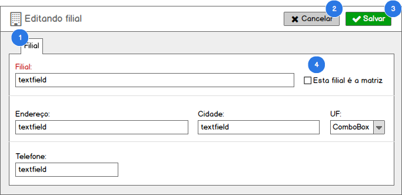

Funcionalidade: Cadastro de Filiais#
Como usuário com perfil (1. Diretor) no SisGeop, eu quero gerenciar as Filiais da JTEL criando, alterando e excluindo os registros de acordo com minha necessidade.
Modelo de dados#

Tabelas relacionadas#
| Tabela | Descrição |
|---|---|
| filial | Armazena os registros de filiais da JTEL no sistema. |
| usuario | Armazena os registros de usuários do sistema |
| contrato | Armazena os registros de contratos entre a JTEL e seus clientes. |
| acesso_contrato | Armazena os acessos que as filiais possuem aos contratos. |
| acesso_filial | Armazena os vínculos entre um usuário e as filiais a que ele tem acesso |
Listar Filiais#
Contexto
- Para acessar essa funcionalidade o usuário acessa o menu Cadastrar > Filiais;
- O sistema deverá exibir a lista de todos os registros cadastrados quando o usuário entrar na tela;
PROTÓTIPO#

1. LISTA DE FILIAIS#
Quando o usuário acessar a tela de listagem de filiais
Então o sistema exibirá os todos as filiais cadastradas no sistema em uma tabela com as colunas definidas no protótipo seguindo a mesma ordem de exibição
2. FILTRO DE FILIAIS#
Quando o usuário preencher os campos do formulário Filtro e clicar no botão Pesquisar
Então o sistema irá aplicar o filtro desejado na lista filiais, retornando apenas filiais que combinam com o grupo de filtros aplicado
Regras
O formulário Filtro pode ser expandido ou encolhido sempre ao clicar na barra de títulos do formulário. E o status encolhido/expandido deverá ficar salvo na sessão do usuário na máquina, mantendo uma memória sempre que o usuário utilizar o SisGeop na mesma máquina.
3. LIMPAR FILTRO#
Quando o usuário clicar no botão Limpar
Então o sistema limpa o formulário Filtro e atualiza a lista de filiais
4. APLICAR FILTRO#
Quando o usuário clicar no botão Pesquisar
Então o sistema aplica o filtro preenchido pelo usuário no formulário Filtro e atualiza a lista de filiais
5. TOTALIZAÇÃO DE REGISTROS#
Quando o usuário acessar a lista de filiais
Então o sistema apresenta o resultado da consulta
E a totalização de registros com a mensagem Mostrando x de y registros
6. PAGINAÇÃO#
Quando o usuário acessar a lista de filiais
Então o sistema apresenta o resultado da consulta
E um componente de paginação que possibilita navegar entre as páginas dos resultados
REGRAS devem ser exibidos em cada página, 25 registros
7. EDITAR FILIAL#
Quando o usuário clicar na opção Editar
Então o sistema aciona o caso Editar Filial
8. EXCLUIR FILIAL#
Quando o usuário clicar na opção Excluir
Então o sistema aciona o caso Excluir Filial
9. NOVA FILIAL#
Quando o usuário clicar no botão Nova Filial
Então o sistema aciona o caso Incluir Filial
Incluir Filial#
Contexto
- Para acessar essa funcionalidade o usuário aciona o botão Nova filial a partir da tela de listagem de filiais;
- O sistema deverá exibir o formulário para a criação de uma nova filial;
PROTÓTIPO#
1. FORMULÁRIO DE INCLUSÃO DE FILIAL#
Quando o usuário acionao o botão Nova filial a partir da tela de listagem de filiais
Então o sistema exibe o formulário de inclusão de filial
2. CANCELAR INCLUSÃO DE FILIAL#
Quando o usuário clicar no botão Cancelar
Então o sistema sai da tela de inclusão de filial e retorna para a tela de listagem de filiais
3. SALVAR FILIAL#
Quando o usuário clicar no botão Salvar
Então o sistema valida o preenchimento do formulário
E Salva os dados preenchidos no formulário criando um novo registro de filial no banco de dados
E Exibe a mensagem "Registro incluído com sucesso" e redirecionando o usuário para a edição da filial criada
3.1 Formulário inválido#
CASO o formulário não esteja devidamente preenchido
ENTÃO o sistema apresenta a seguinte mensagem "Os campos destacados são de preenchimento obrigatório"
E destaca os campos que precisam ser preenchidos para o usuário
3.2 Nome de filial duplicado#
CASO o nome da filial que o usuário estiver inserindo já esteja em utilização por outro registro
ENTÃO o sistema exibirá a seguinte mensagem "Já existe uma filial com este nome"
E interromperá a inserção do registro da filial.
4. MATRIZ#
Apenas um registro poderá ser definido como matriz na tabela de filiais.
QUANDO o usuário tentar salvar uma filial como matriz
E já existir um outro registro definido como matriz
ENTÃO o sistema exibe a mensagem __"A filial [nome da filial] já está definida como Matriz!"
E interrompe a inserção do registro da filial no banco de dados
OBRIGATORIEDADE DE CAMPOS#
O sistema deverá exibir de forma destacada os campos do formulário que são de preenchimento obrigatório
Editar Filial#
Contexto
- Para acessar essa funcionalidade o usuário aciona o botão Editar a partir da tela de listagem de filiais;
- O sistema deverá exibir o formulário para a edição de uma filial carregando todos os dados cadastrados para a filial nos respectivos campos de edição do formulário;
PROTÓTIPO#

1. FORMULÁRIO DE EDIÇÃO DE FILIAL#
Quando o usuário aciona o botão Editar na tela de listagem de filiais
Então o sistema exibe o formulário de edição de filiais com os dados da filial selecionada carregados no formulário para edição
2. CANCELAR EDIÇÃO DE FILIAL#
Quando o usuário clicar no botão Cancelar
Então o sistema sai da tela de edição de filial e retorna para a tela de listagem de filiais
3. SALVAR FILIAL#
Quando o usuário clicar no botão Salvar
Então o sistema valida o preenchimento do formulário
E Salva os dados preenchidos no formulário atualizando o registro da filial no banco de dados
E Exibe a mensagem "Registro atualizado com sucesso" e redirecionando o usuário para a listagem de filiais
3.1 Formulário inválido#
CASO o formulário não esteja devidamente preenchido
ENTÃO o sistema apresenta a seguinte mensagem "Os campos destacados são de preenchimento obrigatório"
E destaca os campos que precisam ser preenchidos para o usuário
3.2 Nome de filial duplicado#
CASO o nome da filial que o usuário estiver inserindo já esteja em utilização por outro registro
ENTÃO o sistema exibirá a seguinte mensagem "Já existe uma filial com este nome"
E interromperá a inserção do registro da filial.
4. MATRIZ#
Apenas um registro poderá ser definido como matriz na tabela de filiais.
QUANDO o usuário tentar salvar uma filial como matriz
E já existir um outro registro definido como matriz
ENTÃO o sistema exibe a mensagem __"A filial [nome da filial] já está definida como Matriz!"
E interrompe a inserção do registro da filial no banco de dados
OBRIGATORIEDADE DE CAMPOS#
O sistema deverá exibir de forma destacada os campos do formulário que são de preenchimento obrigatório
Excluir Filial#
Contexto
- Para acessar essa funcionalidade o usuário aciona o botão Excluir a partir da tela de listagem de filiais;
- A exclusão de uma filial deverá ser uma exclusão Lógica de forma que o registro da despesa nunca será fisicamente excluído do banco de dados;
Quando o usuário acionar o botão Excluir em uma linha na lista de filiais
Então o sistema exibe uma janela de confirmação com a mensagem "Deseja realmente excluir o registro selecionado?"
Quando o usuário confirmar a exclusão do registro
Então o sistema efetua a desativação Lógica do registro da filial
E atualiza a lista de filiais de acordo com o filtro previamente definido pelo usuário